Sparkle Valley character reference review
43 sheets · 128 separate views. Tap any picture to open and zoom. These are reference images; new 3D models have not been generated or deployed.
Technical image review complete. Final owner review remains pending. Sol's transparent variant is linked below; grey-background originals remain the production inputs.
Sol transparent turnaround · Production status
01. Clara
Group A · 30 planned credits · technical review passed
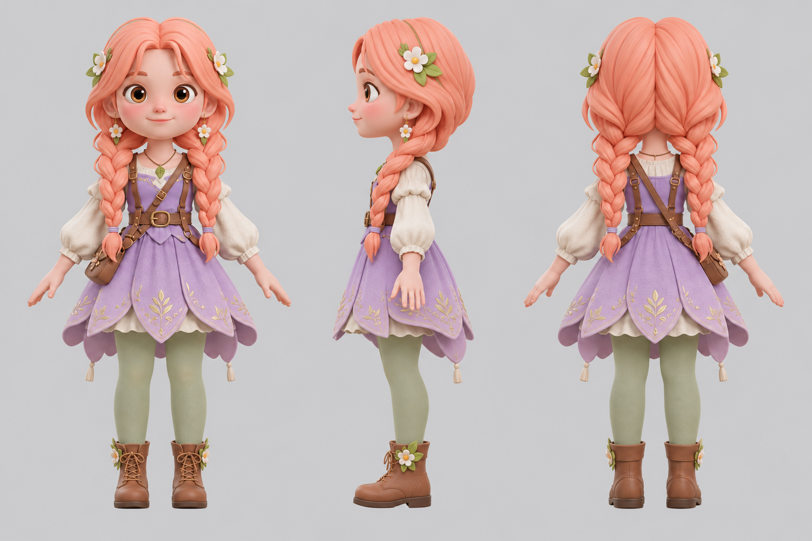
02. Finn
Group A · 30 planned credits · technical review passed
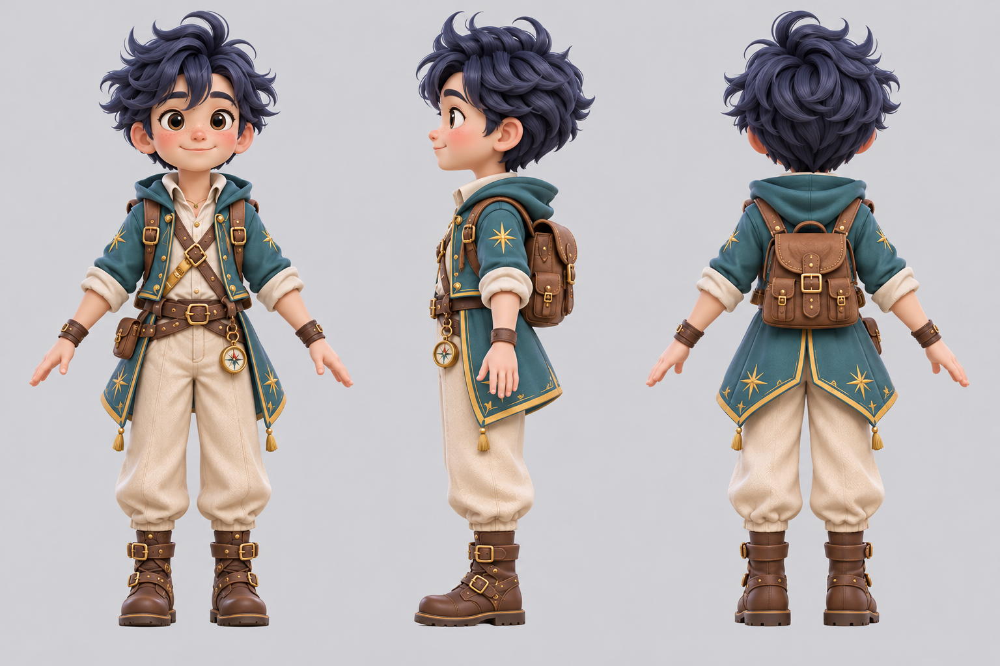
03. Sol
Group A · 30 planned credits · technical review passed
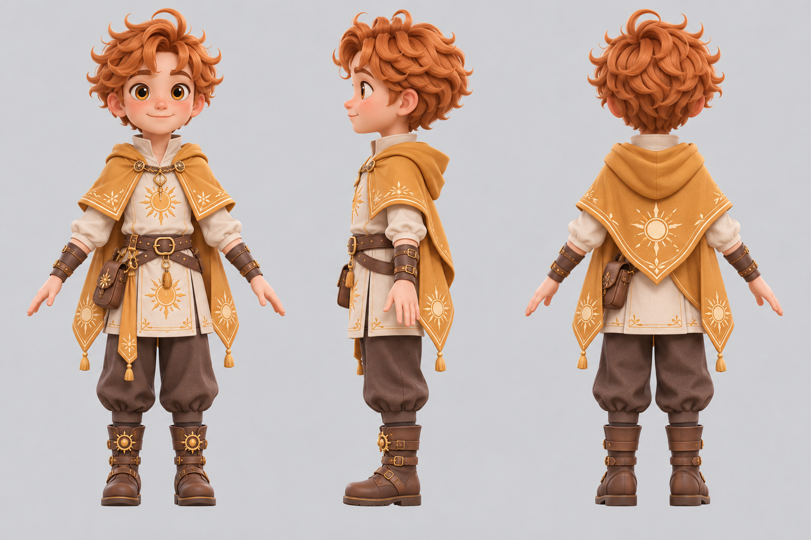
04. Lumi
Group A · 30 planned credits · technical review passed
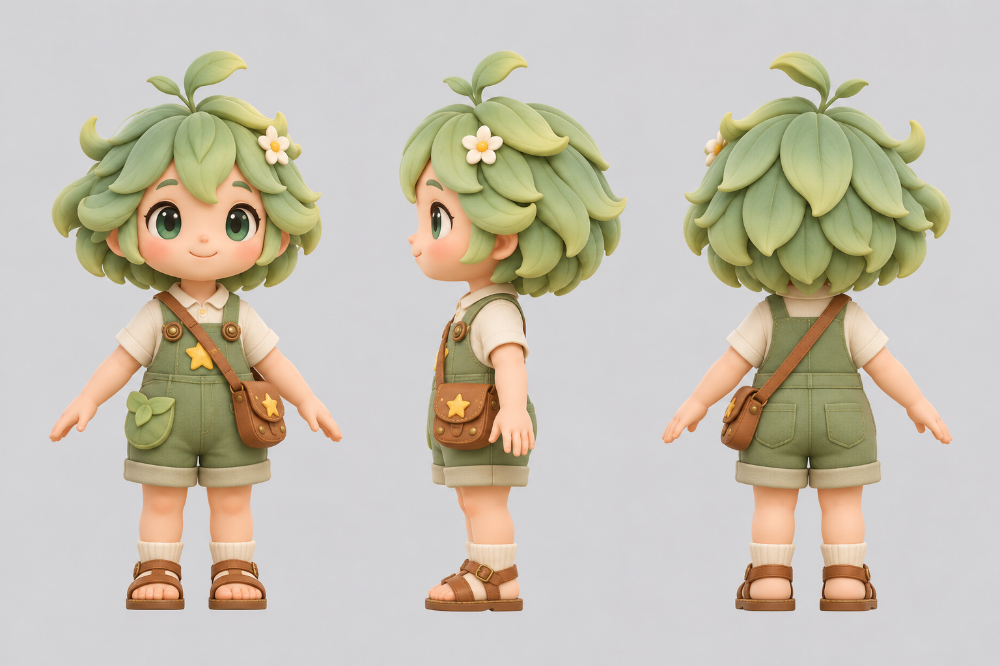
05. Auntie Mai
Group B · 30 planned credits · technical review passed
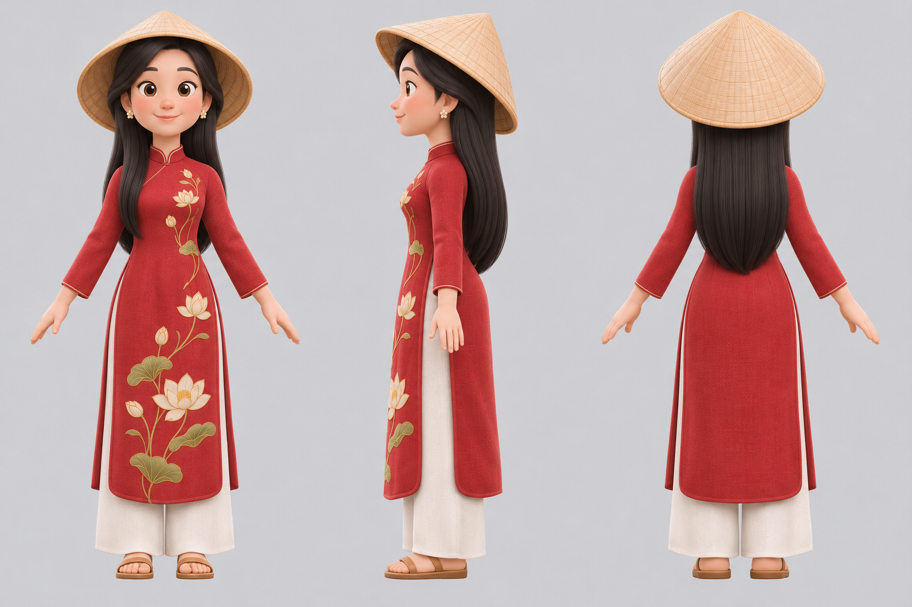
06. Uncle Ba
Group B · 30 planned credits · technical review passed
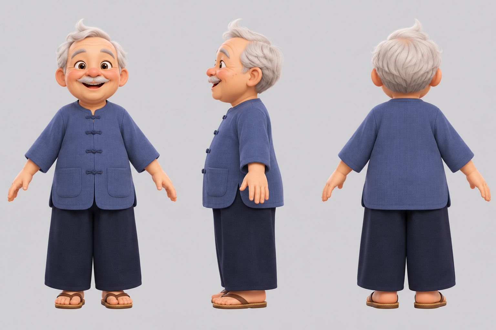
07. Tèo
Group B · 30 planned credits · technical review passed
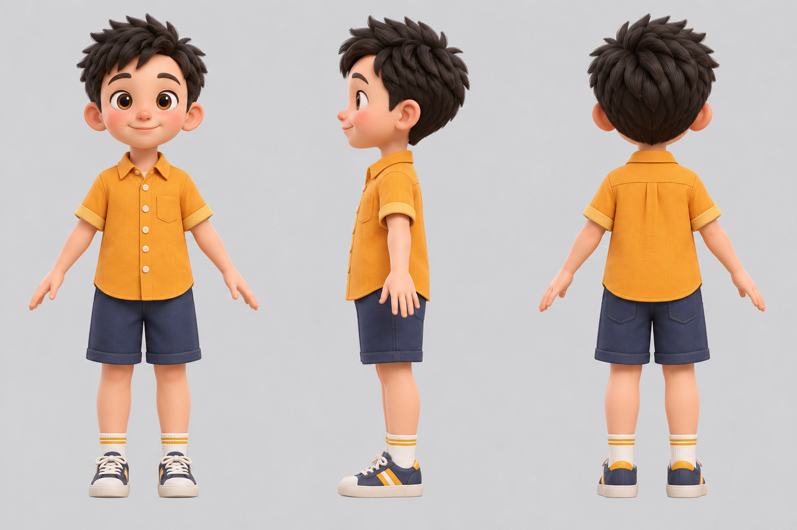
08. Tí
Group B · 30 planned credits · technical review passed
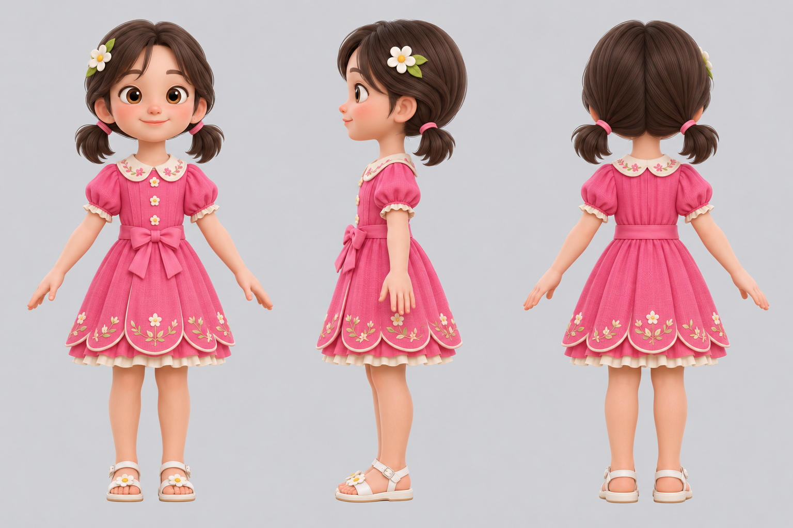
09. Bông
Group B · 30 planned credits · technical review passed
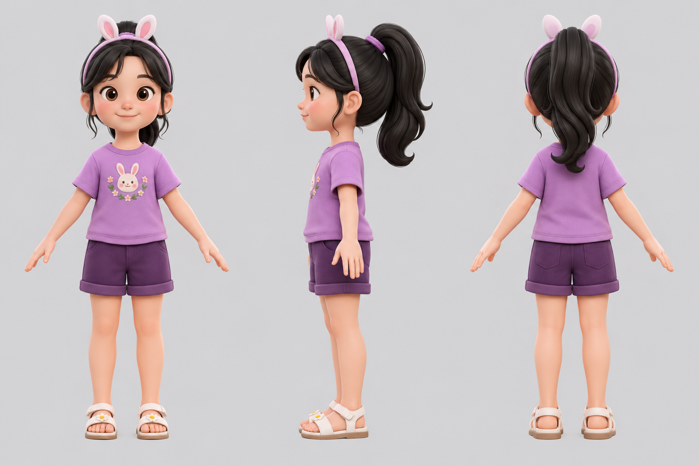
10. Su
Group B · 30 planned credits · technical review passed
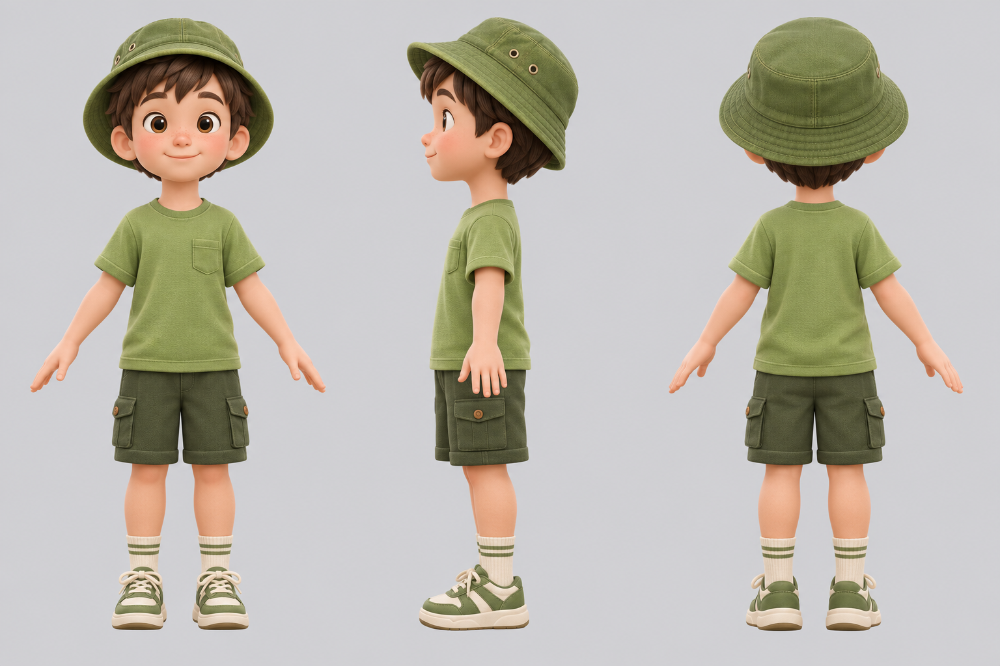
11. Jack
Group B · 30 planned credits · technical review passed
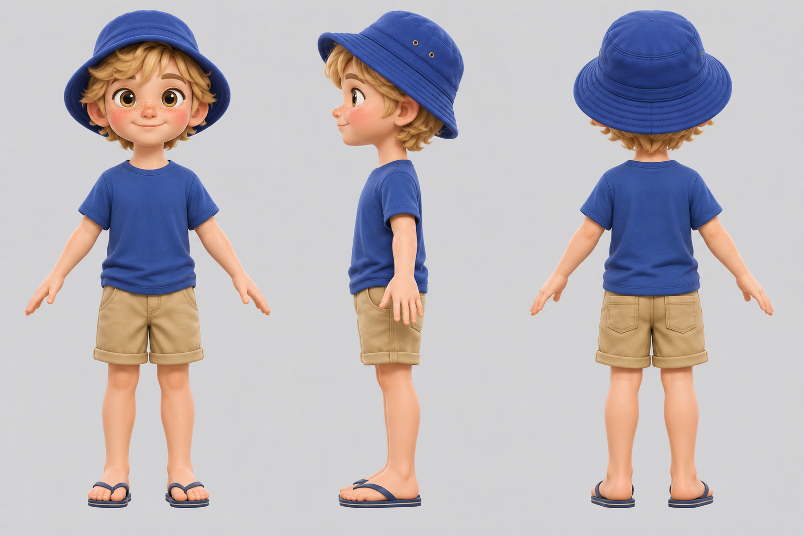
12. Mít
Group B · 30 planned credits · technical review passed
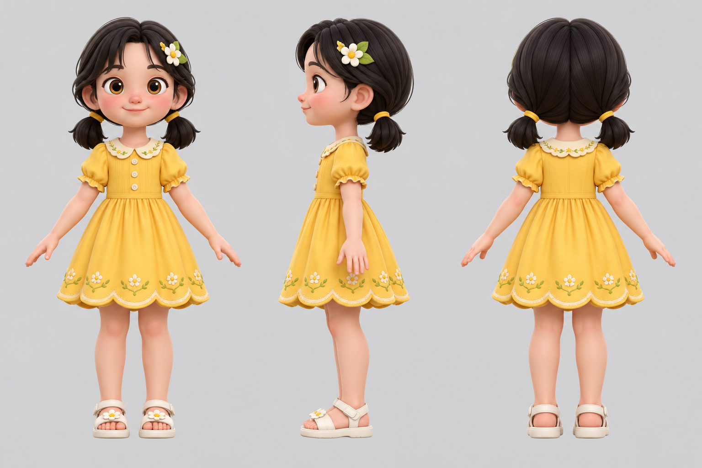
13. Bờm
Group B · 30 planned credits · technical review passed
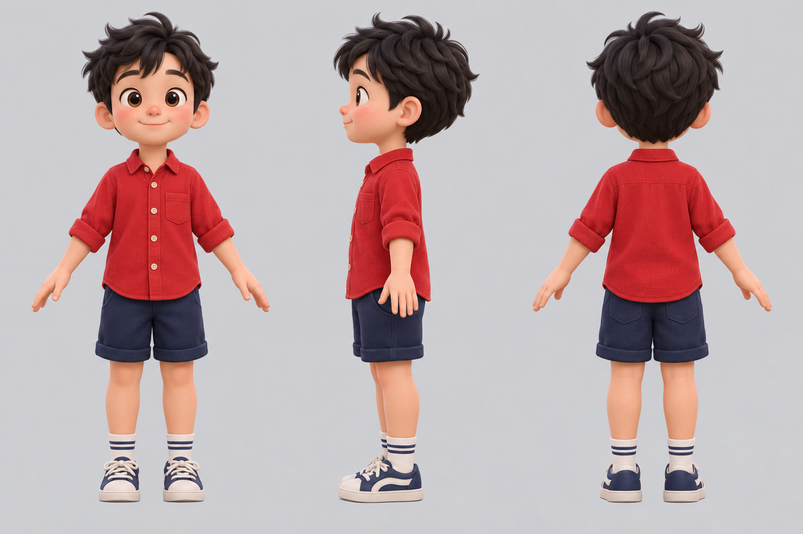
14. Ruby
Group B · 30 planned credits · technical review passed
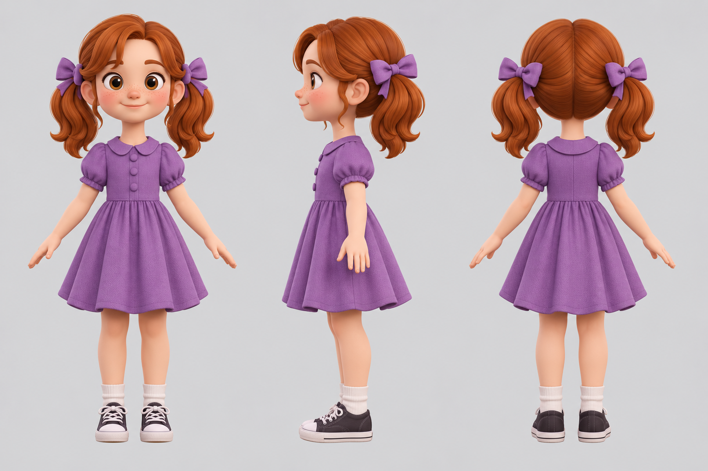
15. Lan
Group B · 30 planned credits · technical review passed
16. Puppy
Group C · 30 planned credits · technical review passed
17. Kitty
Group C · 30 planned credits · technical review passed
18. Bunny
Group C · 30 planned credits · technical review passed
19. Panda
Group C · 30 planned credits · technical review passed
20. Joey
Group C · 30 planned credits · technical review passed
21. Calf
Group C · 30 planned credits · technical review passed
22. Little Dragon
Group D · 30 planned credits · technical review passed
23. Sparkle the firefly
Group D · 30 planned credits · technical review passed
24. Chicken
Group E · 15 planned credits · technical review passed
25. Cow
Group E · 15 planned credits · technical review passed
26. Sheep
Group E · 15 planned credits · technical review passed
27. Pig
Group E · 15 planned credits · technical review passed
28. Water buffalo
Group E · 15 planned credits · technical review passed
29. Bull
Group E · 15 planned credits · technical review passed
30. Mr. Bear
Group F · 15 planned credits · technical review passed
31. Unicorn
Group F · 15 planned credits · technical review passed
32. Koala
Group F · 15 planned credits · technical review passed
33. Emu
Group F · 15 planned credits · technical review passed
34. Platypus
Group F · 15 planned credits · technical review passed
35. Elephant
Group F · 15 planned credits · technical review passed
36. Penguin
Group F · 15 planned credits · technical review passed
37. Turtle
Group F · 15 planned credits · technical review passed
38. Peacock
Group F · 15 planned credits · technical review passed
39. Crane
Group F · 15 planned credits · technical review passed
40. Vietnamese mum in áo dài
Group G · 15 planned credits · technical review passed
41. Vietnamese dad
Group G · 15 planned credits · technical review passed
42. Australian dad
Group G · 15 planned credits · technical review passed
43. Australian mum
Group G · 15 planned credits · technical review passed